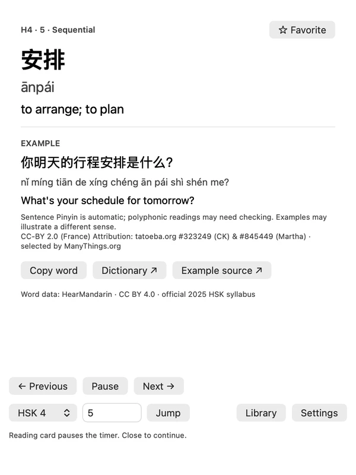

Your words, your order
Choose multiple HSK levels and inclusive serial ranges. Play sequentially or randomly without repeats within a cycle. Jump, pause, or go back.
Chinese vocabulary, in view
Hanzi, Pinyin and English beside your work. A gentle timer brings the next word; click for meaning and examples.

Start with a small range. Choose what appears, how it looks and when the next word arrives.
Choose multiple HSK levels and inclusive serial ranges. Play sequentially or randomly without repeats within a cycle. Jump, pause, or go back.
A smooth fill shows when the next word arrives. Set the delay, font size, width, colors and contrast. Toggle every text component.
Small words take less space. Long text stops at your chosen width.
Open the full meaning and available examples. Search, save Favorites, copy or look up a word. The timer pauses while you read.
See vocabulary sourcesImport UTF-8 CSV or TSV. A version 1 backup carries words, settings, Favorites and playback progress between Mac and Windows.
Mac guideWatch words rotate, the fill count down, and a click open a sourced example.
The Mac pill displays HSK4 word 安排 (ānpái), meaning “to arrange; to plan.” The fill gradually shrinks. Opening the card shows “你明天的行程安排是什么？” with Pinyin, the English translation “What’s your schedule for tomorrow?”, attribution and playback controls. The card pauses the timer. Closing it continues playback, then the next word appears.
Considering VocaBar PRO, Word Drop, Wunderbar or LingoBar? CíBar keeps Chinese vocabulary in view, with its HSK library and backups included.
| App | Its approach | CíBar’s approach |
|---|---|---|
| VocaBar / PRO | Menu-bar words, meanings, intervals and custom imports. Limited free tier with a paid PRO unlock. | HSK vocabulary, serial ranges, sequential/random playback and portable backups, included free. |
| Word Drop | A paid app with rotating vocabulary, Chinese support and word cards. | A Chinese-focused HSK levels 1-6 library, with support for your own vocabulary. |
| Wunderbar | A paid menu-bar app with examples, spaced repetition and audio. Chinese is not listed among its bundled languages. | Free sequential/random HSK review. Spaced repetition and audio pronunciation are not included. |
| LingoBar | A freemium app with examples, custom vocabulary and audio. Chinese is not listed among its 12 bundled languages. | Offline, open-source Chinese HSK study. A focused library rather than multiple learning languages or audio. |
Comparable vocabulary workflows, not complete feature parity. CíBar is independent and is not affiliated with these apps. App code is MIT-licensed; vocabulary and examples have separate licenses.
No monthly bill
macOS 13 or later. Native Swift / AppKit. CíBar stays in the menu bar without a Dock icon.
Unzip, move CíBar to Applications, then open it. Locally signed; not Apple-notarized.
Windows 11 on Intel/AMD x64. Native C++ / Win32. A movable pill sits just above the taskbar.
Extract the entire ZIP; run CiBar.exe beside Resources. Unsigned preview. Windows 11 GUI and resource measurements remain pending.
Starts with HSK4 in sequential order, 45 seconds per word and an adaptive width capped at 260. No seconds label.
Release notes, checksums and all downloadsThe bundled list follows the 2025 HSK 3.0 exam syllabus. Selecting only HSK4 gives its 1,000 new entries; choose levels 1-4 for all 2,000 entries through HSK4.
Headword order and numbering were checked against the official syllabus. This does not certify every translation. Most example Pinyin is automatic and labelled; polyphonic readings can need correction. Examples may illustrate a different sense.
Vocabulary sources and review notesNo account is needed. Vocabulary, examples and progress stay locally. There are no background network requests or cloud sync; dictionary/source links open only when clicked.
Yes. Import UTF-8 CSV/TSV with serial, hanzi, pinyin and english columns. Optional example columns are supported. See the user guide for the required format.
It is a prerelease. Native build/core tests, Windows Server GUI smoke and compatibility with the actual Mac backup model have passed. Real Windows 11 GUI, scaling and five-minute resource tests remain pending. Windows 10 and ARM64 are unsupported.
App code and original assets use the MIT license. Vocabulary and examples have separate Creative Commons licenses. Attribution is bundled with the app; MIT does not relicense third-party data.
Start with a small range. Let the words become familiar.
Download